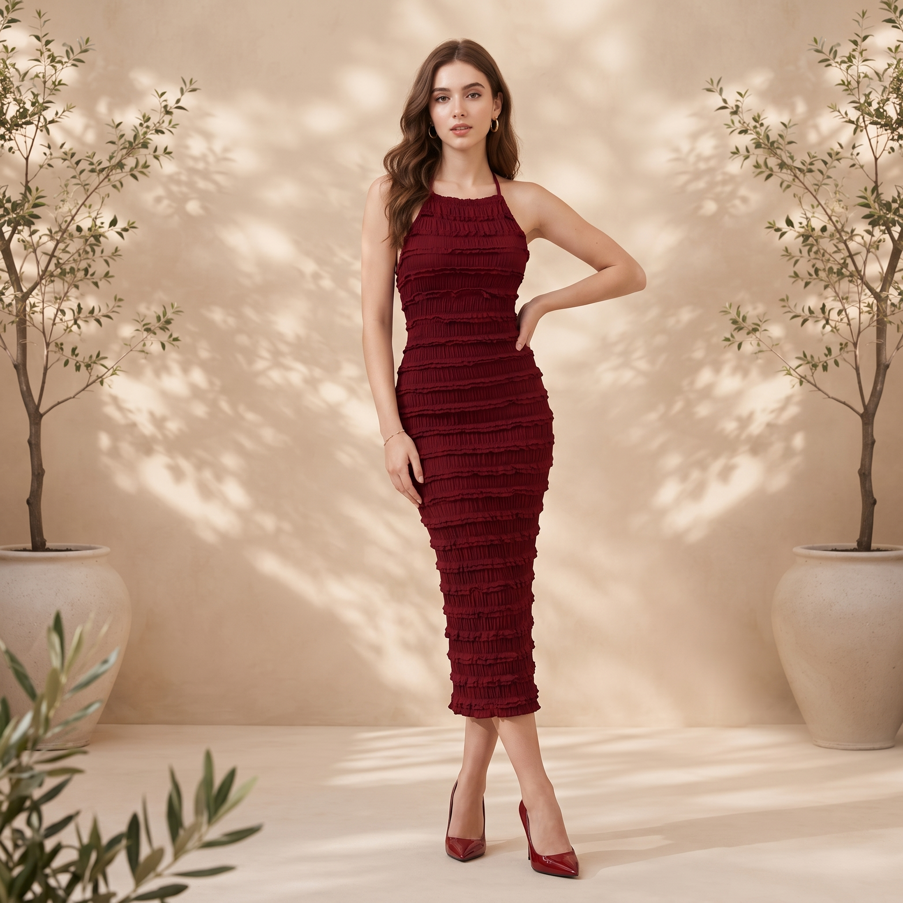
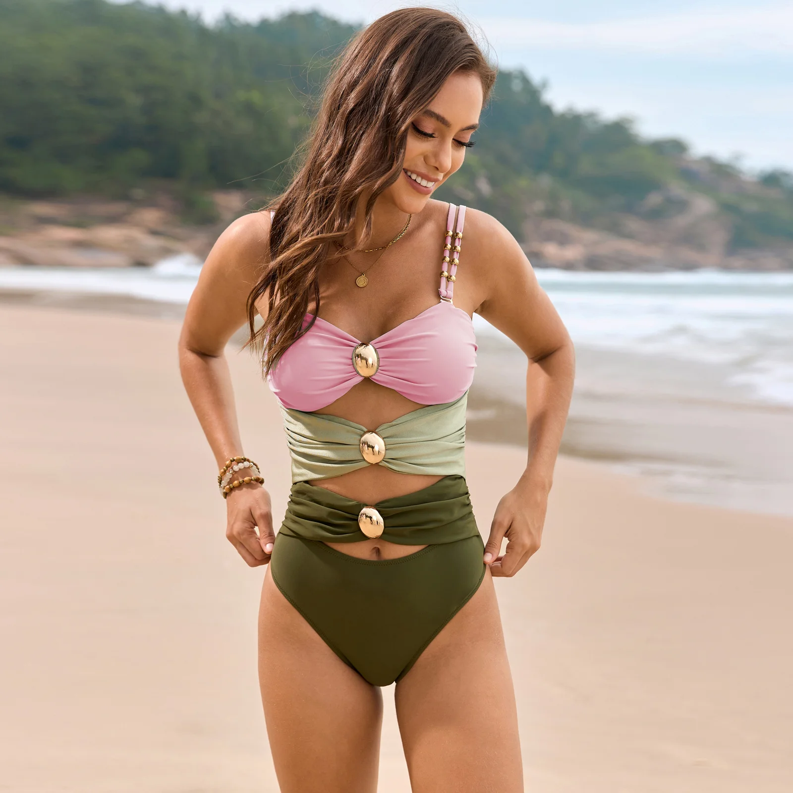
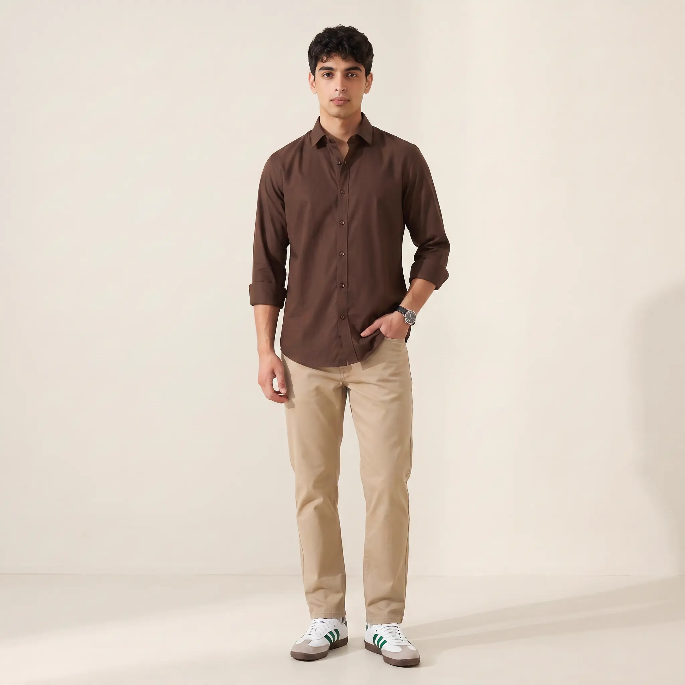
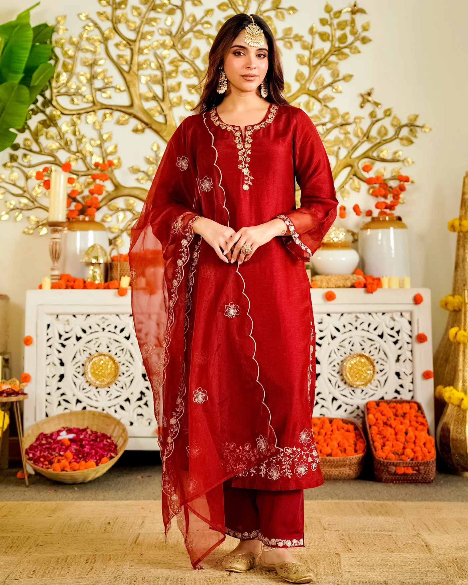

Real Output
Our Latest Creations
A visual collection of recent videos - every video generated, not filmed.





Photo to Motion
Scroll to Expand
No filming. No editing. No prompt. Turn any product photo into a video in minutes.
Watch how Nixi transforms your product image into a professional video automatically.
Any catalog shot, or lifestyle image. One photo is all Nixi needs.
Choose the camera movement and direction that fits your brand and platform.
A scroll-stopping clip, for your catalog. Ready to use.
From static product shot to motion - the full result, in real time.
A visual collection of recent videos - every video generated, not filmed.




Everything you need to know about turning photos into video with Nixi.
Upload a single product photo - a catalog shot, flatlay, or lifestyle image. Nixi's AI animates it into a short, scroll-stopping video with natural motion, camera movement, and styling, ready for social and ads in minutes.
No. Catalog Videos requires zero filming, zero video equipment, and no video editing skills. One static image is all Nixi needs to generate a complete video.
Videos are generated ready for Instagram Reels, TikTok, Meta ads, and product pages - in the aspect ratios each platform expects, with no extra editing required.
Turn your first product photo into a video in under 5 minutes. Start free, no card required.